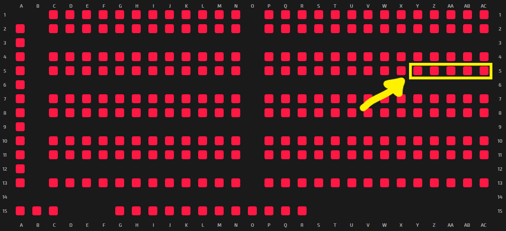

ButterIW4X 2019
Was ist IW4X?
IW4X ist ein standalone Call of Duty: Modern Warfare 2 Client.
Es basiert zwar auf MW2, jedoch wird kein MW2 benötigt.
Das Hauptfeature von IW4X ist ein Serverbrowser welcher sich perfekt für LAN-Situationen
eignet.
Ausserdem bringt IW4X noch extra Waffen, extra Maps, Balance Changes und Bugfixes mit sich.
Da IW4X sehr einfach zum installieren und von Anfang an alles freigeschalten ist, ist es sehr zugänglich.
Installation
Wir bieten an der LAN einen .ZIP Ordner an welcher nur noch entpackt werden muss.
Der Ordner kann bei den ibois von einem USB Stick oder über das Netzwerk kopiert werden.
Username: iw4x
Password: iw4x
Die ibois sind hier zu finden:

Alternativ kann IW4X auch von hier installiert werden:
https://github.com/Jawesome99/IW4x/releases/tag/0.6.0 (How to
install)
Nach der Installation kann das Spiel über "iw4x.exe" gestartet werden.
Der Spielernamen kann in den Settings unter "Options>Multiplayer" geändert werden.
Unter "Barracks" lässt sich mit der Option "Unlock Stats" alles freischalten.
Fun Turnier
Bracket
Rules
- 5 vs 5
- Best of 3
- Search and Destroy
- 15 Runden
Preise
- 25CHF Coop Gutschein
- -
- -
FAQ
-
Blackscreen wenn ich das Spiel starte
-
Fatal Error unter Windows 7
-
Bei weiteren Fragen können die ibois konsultiert werden.
Methode 1:
Falls man eine NVIDIA GPU hat, Geforce Experience Overlay ausschalten.
Andernfalls andere Overlays deaktivieren. (Discord, FPS Counters, Recorders, Steam,
etc.)
Methode 2:
Rechtsklick auf iw4x.exe, Eigenschaften, Kompatibilität und Windows 8 Modus aktivieren.